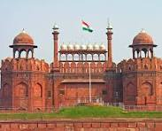
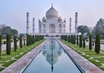
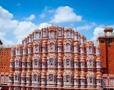

Welcome to my personal photo gallery!
Here you will find my favorite pictures
of Nature, Animals, and Monuments.
Nature Photos
The image showcases a beautiful natural landscape filled with greenery and calmness. Tall trees stand gracefully, their leaves gently rustling in the wind. The scene is vibrant and full of life.
In the background, majestic mountains rise high into the sky, partly covered by soft white clouds. Their snow-capped peaks add a touch of purity and serenity to the overall view.
A clear blue river flows gently through the landscape, reflecting the sky and the trees along its banks. Its peaceful movement brings a sense of calm to the viewer.
A clear blue river flows gently through the landscape, reflecting the sky and the trees along its banks. Its peaceful movement brings a sense of calm to the viewer.
A clear blue river flows gently through the landscape, reflecting the sky and the trees along its banks. Its peaceful movement brings a sense of calm to the viewer.
Animals
The image shows a group of animals in their natural habitat. They look peaceful and comfortable in their surroundings.
There are different animals in the picture, such as deer, birds, and maybe a few monkeys. Each one is doing something — eating, resting, or moving around.
Green trees and grass cover the area, giving the animals plenty of space to live and play. It looks like a safe and healthy environment.
Some birds are flying in the sky, while others sit on branches. Their bright feathers add color to the scene.
This image reminds us of the beauty of wildlife. It shows how animals live freely in nature, just as they should.
Monuments
The Taj Mahal is a white marble monument in Agra, India. It was built by Emperor Shah Jahan in memory of his wife Mumtaz Mahal. It is known for its beauty and is one of the Seven Wonders of the World.

The Eiffel Tower is a famous iron structure located in Paris, France. Built in 1889, it stands tall as a symbol of French art and engineering. Many tourists visit it every year.

The Great Wall of China is one of the longest walls in the world. It was built to protect China from invaders. Today, it is a symbol of strength and ancient Chinese history.

The Statue of Liberty is in New York City, USA. It was a gift from France to America and stands for freedom and democracy. It is one of the most recognized symbols in the world.
The Colosseum is an ancient amphitheater in Rome, Italy. It was used for gladiator fights and public shows. It is a reminder of the Roman Empire's rich history.